Software analysis
"哪怕你将来去开个奶茶店 和计算机毫无关系,我也希望你从这门（务虚的）课中清楚自己喜欢的是什么"
这里是南京大学《软件分析》课程笔记，课程老师：谭添、李樾。
课程来源：https://www.bilibili.com/video/BV1b7411K7P4/?vd_source=011a0da08eb93b1750cb8ba557ef6644
Now, it is time to start.
1
1.1
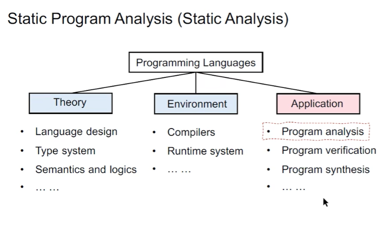
PL即编程语言(programming language)，分为理论、环境与应用部分。支持语言运行的一个系统叫做环境(environment)。保证系统的可靠性与安全性指向语言的应用层面(application)，我们的程序分析就是来自这一层面。
语言主要分为三类，命令式编程语言(将语言拆解为一条一条来执行,c、java)、函数式编程语言(py、js)、逻辑式编程语言(通过逻辑的与或非声明来得到结果)，这个分类是不变的，但是编写的程序越来越复杂。那么这种复杂的程序/软件的安全或者其他问题如何解决？
为什么需要静态分析：
-
发现潜在问题
- 可靠性的保证：内存泄漏...
- 安全性的帮助：私有信息的泄露，注入...
-
编译优化：死代码
- 理解程序
静态分析：想在运行程序P之前，我就获取程序的相关的行为，并且判断其是否满足某些性质。
- 是否存在私有信息的泄露？
- 是否存在空指针？
- 会有指向相同内存地址的指针吗？
- 是否存在死代码，可以移除以加速？
- ...
莱斯定理：并不存在方法能准确判断程序是否满足某些性质(注意准确，即说有就有，说没有就没有)。换而言之，递归可枚举的语言(图灵机可识别的语言)的不那么简单(只要跟程序运行行为相关的，令人感兴趣的，我们都认为是有用的、不那么简单的)的性质，是无法准确判断(decidable)的(不能说是就是，说否就否)。
总结：不存在perfect的静态分析方法，来准确判断所有的性质。
perfect的静态分析满足：sound且complete
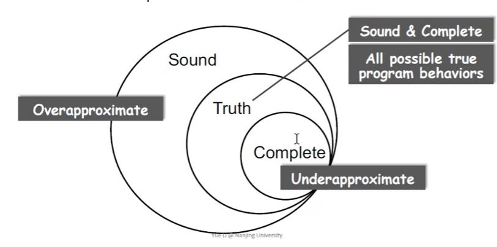
truth就是事实，比方说程序里存在10个空指针引用，这就是truth。我们不存在perfect的方法判断确实有10个，sound代表过近似(overapproximate)，我判断它有10+个，这可能是11，12个，也可能成千上万个，但是其中就是包含这10个空指针引用；complete代表欠近似(underapproximate)，我判断它有10-个，这可能是9，8个，爆出来的就是truth，但是不一定爆得全。
但是我们可以追求"useful"的静态分析，只需满足compromise soundness(false negative)或compromise completeness(false positive)中的一个。
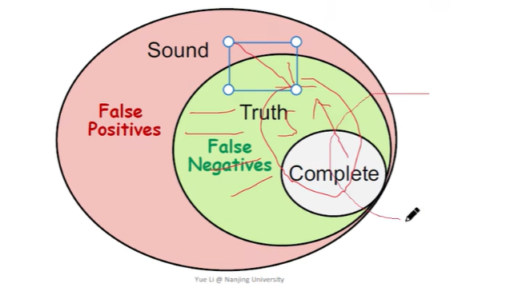
妥协什么就是只追求另一个，妥协soundness就是只追求complete，这造成了漏报(false negative)；妥协completeness就是只追求sound，这造成误报(false positive)。
大部分的静态分析是妥协completeness的，即宁愿误报也不漏报(sound but not fully precise)。
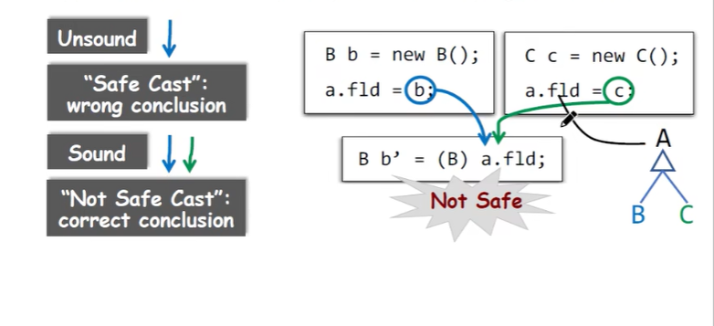
上面的一个例子陈述了sound(理解为全面性似乎比较恰当)的重要性。如果你不sound，只检查了蓝色的数据流，那么如果有绿色数据流就会导致强制类型转换，可能出现运行时错误。不检查绿色数据流就是不sound的，反之是sound的，这两者最后的判断也产生了不同(safe cast or not)。
Static Analysis-- Bird's Eye View
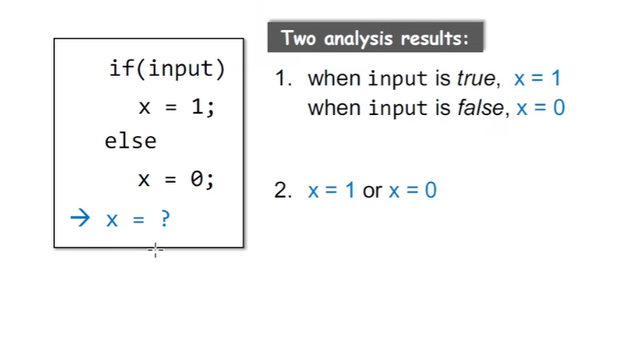
结论1、2都是正确的，这里不多解释。
结论3：x=0 or 1 or 2 or 3 or ... 这也是正确的，因为从静态分析角度sound就是对的。
结论4：x= -1 or 0 这就是错误的。
结论1是sound、precise且expensive的，因为它维护起来开销更大，而结论2是sound、imprecise且cheap的，因为它维护起来开销更小，但是并不完全精确。
所以我们可以重新阐述静态分析的概念，即在保证或接近(ensure or get close to)soundness，在精度与开销(速度)上做一个平衡。
1.2
abstraction and overapproximation。
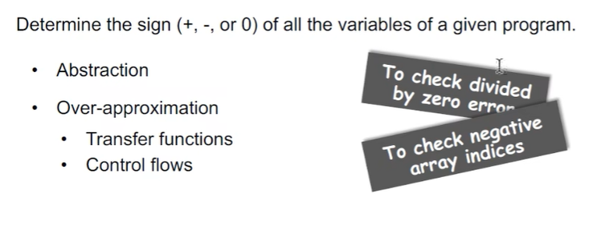
简单的例子：判断正负还是0.
我们先来讲抽象。我们并不关心是1还是10000，只看符号，这就实现了具体值(1000 1 -1 0 e?1:-1 w/0)到抽象域(+ - 0 unknown undefined)的映射。
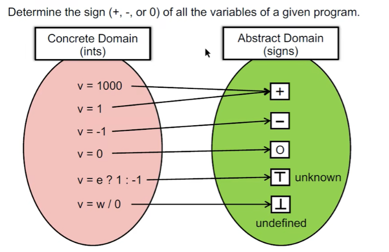
那么显而易见的，我们需要一个transfer function(转换函数)，这是由我们分析的问题与不同程序状态的语义共同决定的，且是在抽象域上定义的。
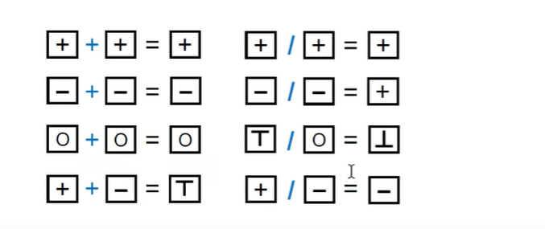
这就是我们根据目前的问题定义的一个transfer function(当然不是很全)。
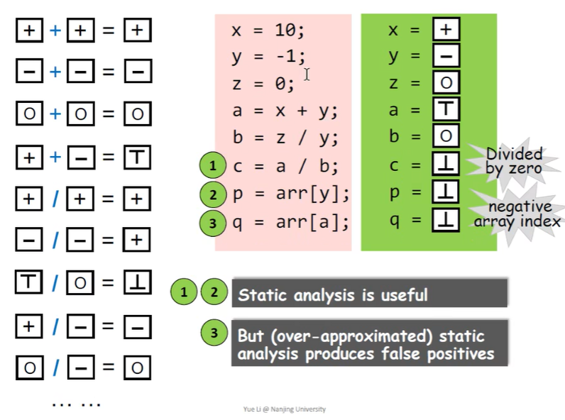
1、2让我们发现静态分析是useful的，因为爆出了几个错误。
3体现了静态分析的误报，因为实际q未必是数组负索引。
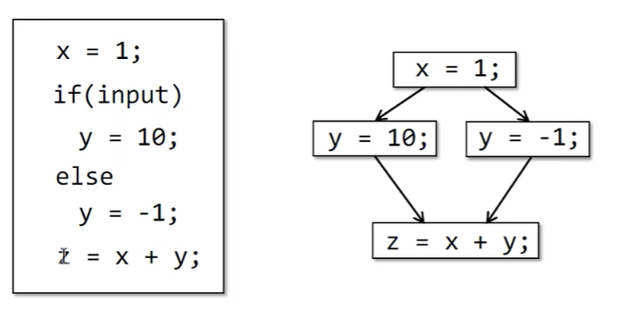
这是一个简单的控制流图。所有control flow汇聚的地方都要将其merge(过近似)。由于没有办法实际枚举所有路径，使用flow merging是默认的方法。
2
Intermediate Representation(IR):中间表示。
我们认为利于静态分析的IR是简便的，且能够表示程序的所有行为。
2.1
编译器的一个流程。
第一步骤：词法分析(Lexical Analysis)，将源代码转化为Tokens(使用正则表达式regular expression)。就拿英文举例子，You are a man就会被转换为4个合法的tokens，而You goouojd由于并不能组成合法的单词，因此就无法通过词法分析。
第二步骤：语法分析(Syntax Analysis)，将Tokens转化为AST(抽象语法树)(使用上下文无关文法 context-free grammar)。比如I am clever就能通过，那比如Like your hair I不符合语法规则，也就不通过。
第三步骤：语义分析(Semantic Analysis)，将AST转化为decorated AST(使用arribute grammar)。比如Apples eat you就不通过语义分析。
第四步骤：IR生成，将decorated AST转化为IR。
第五步骤：机器码转换，将IR转化为机器码。
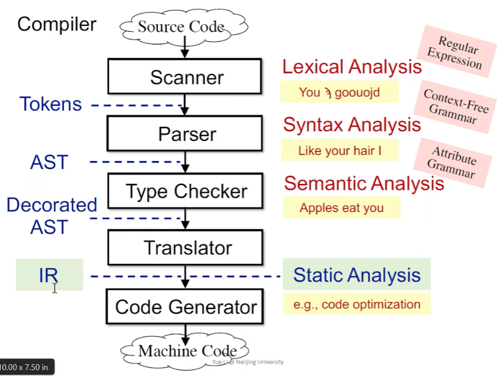
显然是不会直接跳过前面合法性的检查来直接转换为IR的，因为如果前面基本的都通不过，那还要交给错误检测吗？
2.2
AST vs IR
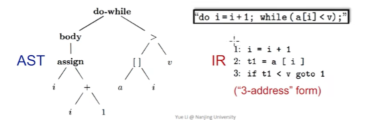
AST:
- high-level，接近源代码的
- 与上一条相对应的，依赖于不同的语言
- 利于快速类型检测
- 看不出控制流的信息
IR:
- low-level，接近机器码的
-
与上一条对应，与语言依赖性不高(语言无关的)
- 由于这一性质，IR成为静态分析的重头戏
- 较简洁
- 看得出控制流的信息
2.3
e.g.
a + b + 3
→
t1 = a + b
t2 = t1 + 3
三地址码(3-Address Code 3AC)：
- 在一个操作中，右侧最多只有一个操作符
- 每个3AC最多含有3个地址
这个"地址"定义比较不一样，可以是：
- name:
a,b - constant:
3 - compiler-generated temporary:
t1,t2
每一个操作都有其三地址码。
我们使用soot作为该课程的IR，soot's IR is Jimple.
-
for循环(Loop)
// Java Src package nju.sa.examples; public class ForLoop3AC{ public static void main(String[] args){ int x = 0; for(int i = 0;i < 10;i+++){ x = x + 1; } } }java // 3AC(jimple) public static void main(java.lang.String[]) { java.lang.String[] r0; int i1; r0:= @parameter0: java.lang.String[]; i1 = 0; label1: if i1 >= 10 goto label2; i1 = i1 + 1; goto label1; label2: return; } -
Do-While循环
java // Java Src package nju.sa.examples; public class DoWhileLoop3AC{ public static void main(String[] args){ int[] arr = new int[10]; int i = 0; do{ i = i + 1; }while(arr[i] < 10); } }java // 3AC(jimple) public static void main(java.lang.String[]) { java.lang.String[] r0; int[] r1; int i1; r0:= @parameter0: java.lang.String[]; r1 = newarray (int)[10]; i1 = 0; label1: i1 = i1 + 1; $i0 = r1[i1]; if $i0 >= 10 goto label1; return; } -
Method call
```java package nju.sa.examples; public class MethodCall3AC{ String foo(String para1, String para2){ return para1 + " " + para2; }
public static void main(String[] args){ MethodCall3AC mc = new MethodCall3AC(); String s = mc.foo("hello", "world"); } }```
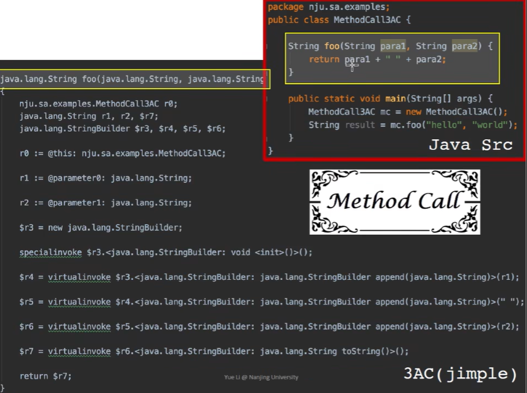
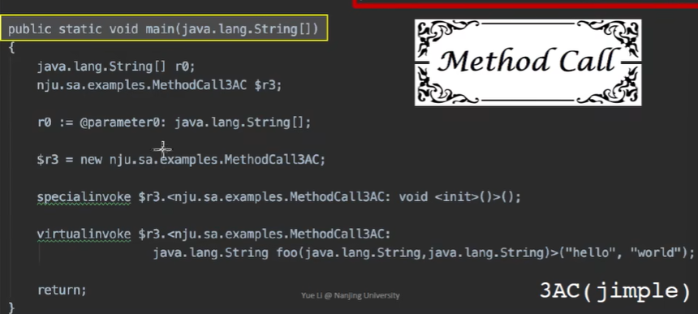
- invokespecial: 调用构造函数、私有方法、superclass methods
- invokesvirtual: 调用实例方法
- invokeinterface: 不能优化，检查接口实现
- invokestatic: 调用静态方法
啊卧槽这一块怎么这么难method signature: class name: return type method name(parameter1 type, parameter2 type, ...)
-
class
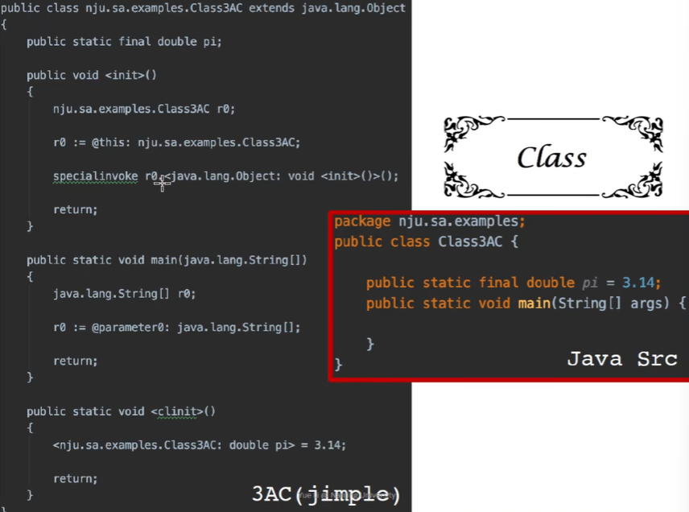
init方法是默认生成的
pi对应的构造函数，clinit是用于初始化所有静态变量值。
2.4
Static Single Assignment(SSA)
很好理解，就是每个变量只被赋值一次，比方说p、q这两个变量，它们会分出p1、p2、q1、q2...来表示同一个变量的不同状态。

但是这里，我们说每一个变量只被赋值一次，我们重新用其他变量名来表示不同状态。
为了避免歧义，SSA引入了"phi-function"\(\phi\)以应对控制流的交界处合并。
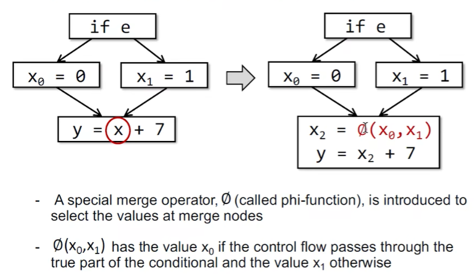
2.5
Control Flow Analysis：我们如何建立Control Flow Graph(CFG)？
CFG给予静态分析的基本结构，它的每一个节点可以是单独的3AC，也可以是多个3AC组成的Basic Block(BB)。
Basic Block(BB): 满足下列性质的最多的连续3AC序列。
- 只有一个入口，且为第一条指令
- 只有一个出口，且为最后一条指令
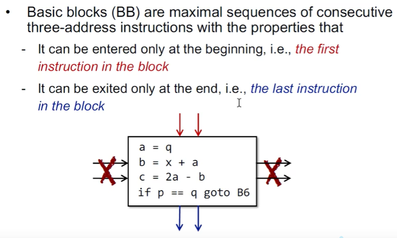
ok这里老师引导我们思考如何从3AC序列转换至BBs，我的思路就是贪心捕捉，第一条指令肯定就是第一个BB的开头，每一个BB持续拿指令，直到要么有第二个入口或者出现第二个出口我们就结束。来我们看看老师怎么说。
哦老师说的大差不差，就是第二个入口会是什么？无非就是其他指令跳转到的地方嘛，同理第二个出口就只会是要跳转到其他地方的指令。
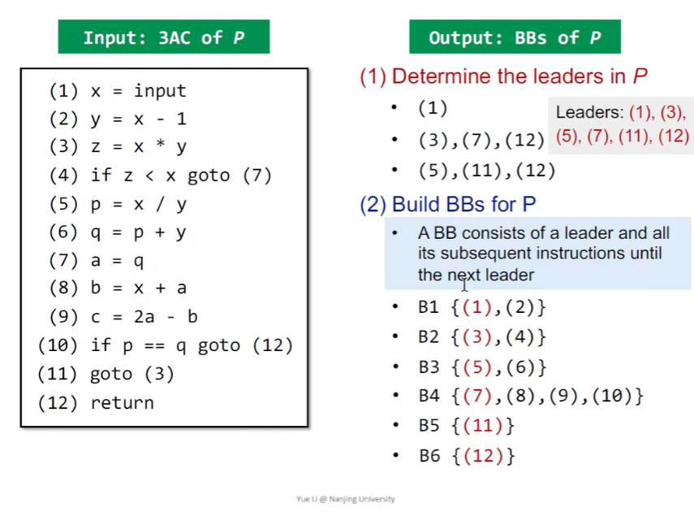
leader是什么？很好理解的，跳转指令的下一条指令与其跳转到的地方就是所有的leader，当然整个3AC的总开头和总结尾也都是。
那么CFG的绘制就很简单了，BB到BB有边当且仅当：
- BB1到BB2有有/无条件的跳转
- BB2紧跟BB1，且BB1没有有/无条件跳转
BB1是BB2的前驱(predecessor)，BB2是BB1的后继(successor)。
还有两个特殊节点Entry与Exit，Entry是所有BB的前驱，Exit是所有BB的后继，但它们并不是可执行的IR。
3
Data Flow Analysis -- Applications
how applicaton-specific Data Flows through the :
- Nodes(BBs/statements)：transfer function
- Edges(control flow)：control-flow handling
- CFG(a program)
回顾一下判断数字正负的例子，这里不具体说了。
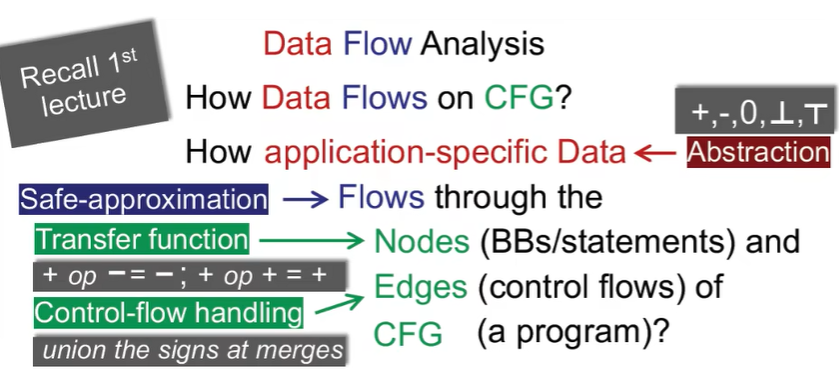
may analysis:最常见的静态分析，输出可能是正确的(over-approximation)
must analysis: 输出一定是正确的(under-approximation)
不论是may还是must analysis，其目的都是保证分析的safety。
3.1
一个基本知识的概览。
Input and Output States:
- 每一个IR statement的执行意味着从一个input状态转为output状态
- input状态与program point before(after) the statement相关
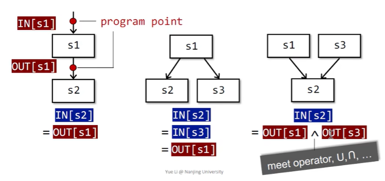
注意这个^符号表示归于。
domain就是所有的可能抽象值的集合。
因此我们对数据流分析给出一个定义：
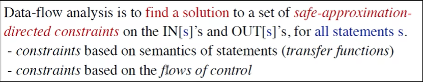
我们最常见的transfer function是forward analysis，\(OUT[s] = f_s(IN[s])\)，反过来的backward analysis，\(IN[s] = f_s(OUT[s])\)。
然后讨论控制流，有两种：
- BB内部的，这显而易见是\(IN[s_{i+1}] = OUT[s_i]\)
- BB之间的，这就要看BB之间的跳转了。明确:\(IN[B] = IN[s_1]\)和\(OUT[B] = OUT[s_n]\)，并且\(OUT[B] = f_B(IN[B]) \ \ f_B = f_{s_n} * ... * f_{s_1}\)和\(IN[B] = \cap P_{\ \ P \ a \ predecessors}\)。
3.2
Reaching Definition:
A definition \(d\) of a variable \(v\) is said to reach a program point \(p\) if there is a path from the entry of the procedure to \(p\) such that \(d\) is not killed along that path.
我们不妨翻译一下它，非常简单，就是说p reach q路径上如果没有新的定义(kill)。
这是可以用来检测的，比如对于变量初始化的检测，在程序入口增设循环定义，那如果一个变量\(v\)reach a point \(p\) where \(v\) is used，那么这个变量可能没被初始化。
这是一个May Analysis，老师的解释是，我们可能有成千上万条路径，每个可能被kill，也可能不，但是只要发现了一条kill就报错。
也许很不好理解，我们这里举个例子：
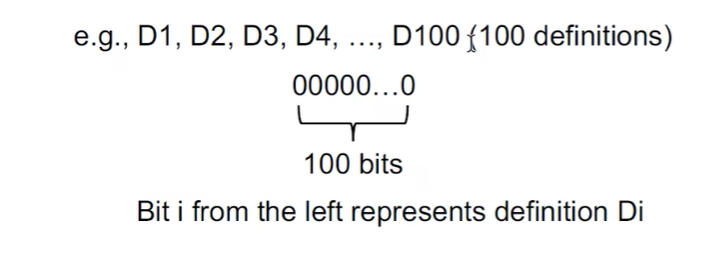
就是所有对于变量的定义，那么我们就可以定义transfer function了，这是所有此类分析的基础。

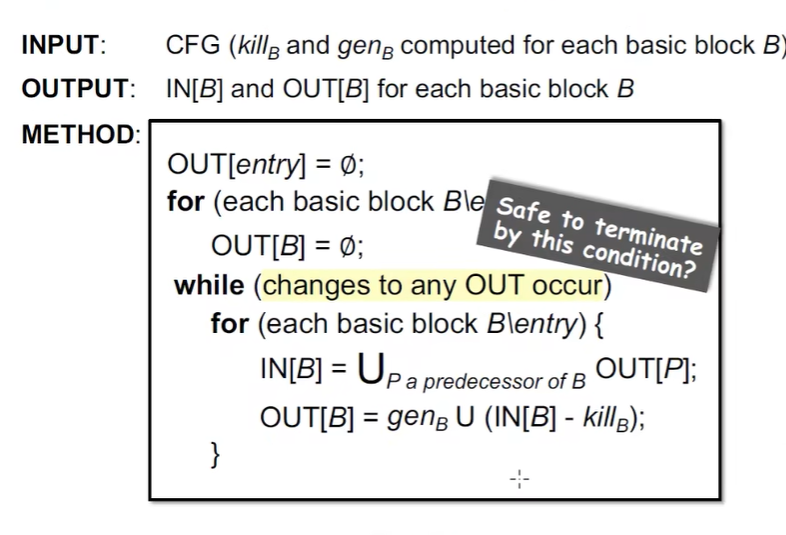
其中gen表示在此BB中定义的变量的标号，kill表示在此BB中定义的变量在其他地方(即被kill)的标号。
control flow就简单了，简单拿所有定义就可以。
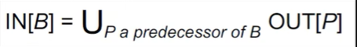
老师提出了一个问题，这个迭代过程会结束吗？
答案是会的。你看表达式\(OUT[B] = gen_B \cup (IN[B] - kill_B)\)，那么\(OUT[B]\)是不会减少的，所以这个迭代过程会结束。
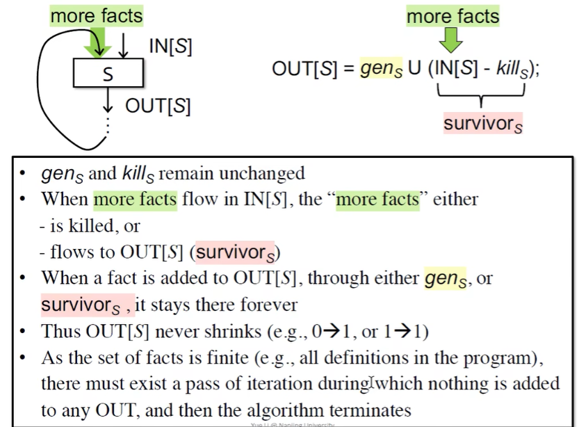
4
"你们是大学生啊，要切记不要浮躁 ... 有这种浮躁的心理"
Live Variable Analysis：Live variables analysis tells whether the value of veariable v at program point p could be used along some path in CFG starting at p.If so , v is said to be live at p;otherwise, v is said to be dead at p.
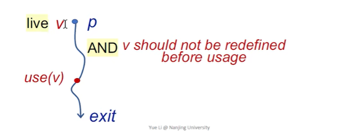
就是一条路径上被使用且没有被重定义。
举个例子，寄存器的分配，假设一个情景，寄存器全满了但是我们想要用一个来存取值，我们最好使用the register with a dead value.
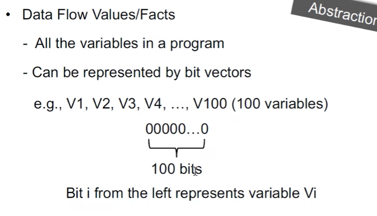
类似的抽象方式，之前是针对"definition"，现在针对"variable"。
老师提到使用backward analysis，因为这样可以自动向上传是否被use的信息，而不用像forward analysis那样每向下一个要与上一个关联。
与reaching definition类似，这是一个may analysis。
我们可以理解一下这个流程，举个statement的例子：
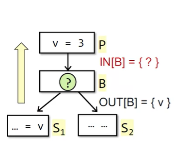
我们讨论B的statement的时候的IN[B]：
1. 对于B:k=n IN[B] = {v}
2. 对于B:k=v IN[B] = {v}
3. 对于B:v=2 IN[B] = {}
4. 对于B:v=v+1 IN[B] = {v}
5. 对于B:v=3 k=2 IN[B] = {}
6. 对于B:k=v v=2 IN[B] = {v}
针对这个实例，我们理解了，Live Variable Analysis就是检查变量是否在使用之前被redefine，是则dead，否则就是live。换句话说，use在define之前就是live的。
我们也借此得到了一个transfer function：\(IN[B] = use_B \ \cup \ (OUT[B] - def_B)\)
一般情况下，may analysis的初始化定义为空，而must analysis的初始化定义为全集(即全1)。
算法结束，即所有的IN都不发生改变的时候。
4.2
Available Expression Analysis
An expression x op y is available at program point p if :
- all path from the entry to p must pass through the evaluation of x op y
- after the last evaluation of x op y, there is no redefinition of x or y
我们可以在p点把x op y用最新的一次evaluation来替代。
一时间不太好理解，看看例子：
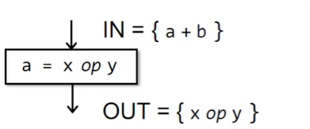
对于这个情景，首先需要把新出现的expression加入OUT，同时将重定义的a = x op y(影响到了a + b)移除，我们也就简单地得到了transfer function。
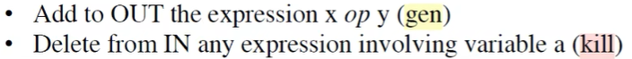
由于所有path都要有效，即输入应该是交。
那我们就看出了，这其实是一个must analysis，假设我们把例子的情景稍微改一下，把b = e * x的那一段删除，我们最后得到IN的就是空的。
4.3
A nice summary!
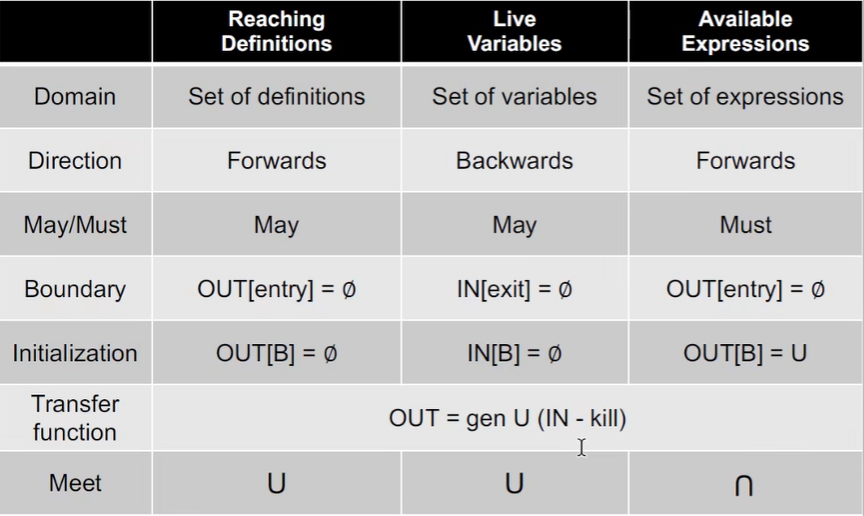
5
数据流分析的foundation部分，据说晦涩难懂。
首先需要view iterative algorithm in another way：我们假设一个有k结点的CFG，那我们的目的就是在每次迭代中不断计算其对应节点n的OUT[n]。
那么我们假设一个k-元组有\((OUT[n_1],...,OUT[n_k])\)这就是一个集合\((V_1×V_2×...V_k)\)即\(V^k\)。
每次迭代其实可以理解为从\(V^k\)到\(V^k\)的一个新映射F，即\(F:V^k→V^k\)。
这样，算法就输出了一系列的k-元组直到出现一模一样的k-元组。
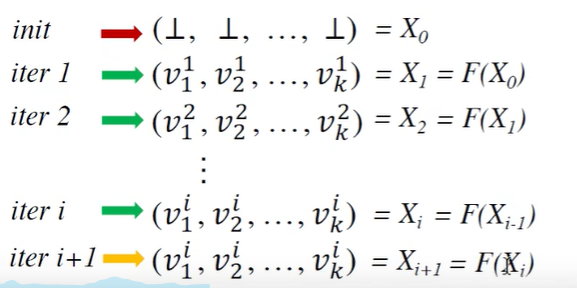
欸这个像不像不动点，类似数值分析的那个逼近。对的就是。
5.1
Partial Order: We define poset as a pair (P, ≤) where ≤ is a binary relation defines a partial ordering over P, and ≤ has the following properties:
- 自反性： 任意x∈P，x≤x
- 反对称性： 任意x,y∈P，x≤y且y≤x，则x=y
- 传递性： 任意x,y,z∈P，x≤y且y≤z，则x≤z
partial is compariable
集合的上下界：给定poset(P,≤)以及其子集S，u∈P是一个S的上界如果对于任意x∈S，x≤u。类似地，l∈P是一个S的下界如果对于任意x∈S，l≤x。
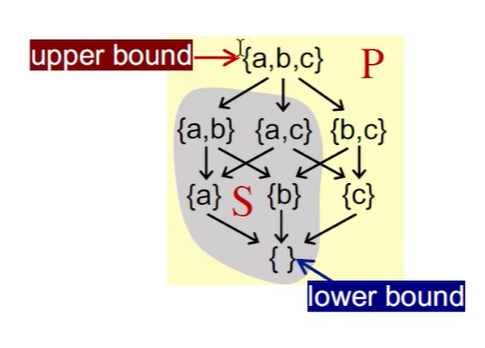
这个例子中上界为{a,b,c}，下界为{}(空集)。
最小上界(lub)与最大下界(glb)：就是所有上界的子集与所有下界是其子集。
- 并不是所有poset都是有lub或glb的
- poset的lub和glb是唯一的
Lattice(格)：一个poset(P,≤)是lattice如果对于任意x,y∈P，存在唯一的最小上界x∨y和唯一的最小下界x∧y。
semilattice(半格)：如果只有x∨y叫做join semilattice，如果只有x∧y叫做meet semilattice。
完全格：一个lattice是complete lattice如果对于任意S∈P，存在S的最小上界和最大下界。
那么我们定义完全格的最大项()为"顶"(top)最小项为"底"(bottom)。
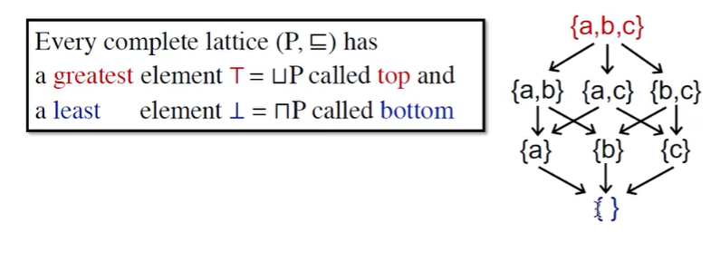
有穷格一定是完全格，但是完全格不一定是有穷格(0-1中的所有实数)。
乘积格(product lattice):给定i个格：\(L_1 = (P_1, ≤_1),...,L_i = (P_i, ≤_i)\)，对于其每一个都有\(\cap_i\)与\(\cup_i\)，我们定义乘积格\(L^n = (P, ≤)\)，其中\(P = P_1 × ... × P_i\)，\(≤\)定义为\((x_1,...,x_i) ≤ (y_1,...,y_i)\)当且仅当\((x_1 ≤_1 y_1) ∧ ... ∧ (x_i ≤_i y_i)\)。
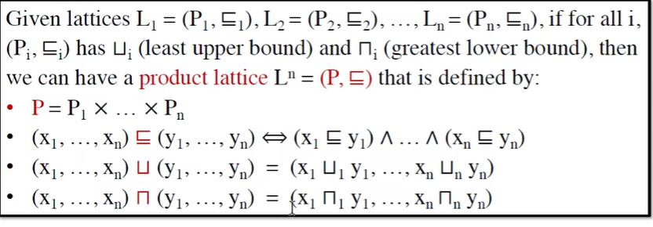
- product lattice也是lattice
- product lattice是complete lattice当且仅当每个L_i都是complete lattice
5.2
Data flow analysis
- D: a direction of data flow
- L: a lattice including domain of the values V and a meet \(\cap\) or join \(\cup\) operator
- F: a family of transfer function from V to V
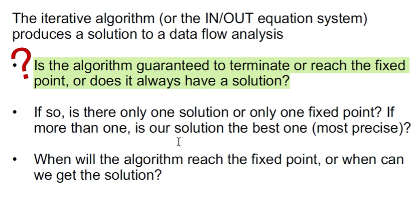
单调性：如果对于任意x,y∈V，x≤y且F(x)≤F(y)，则F是单调的。
不动点定理：
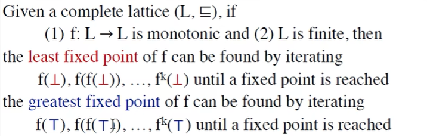
阐述了不动点的可达到性。
- F是单调的
- L是有穷的
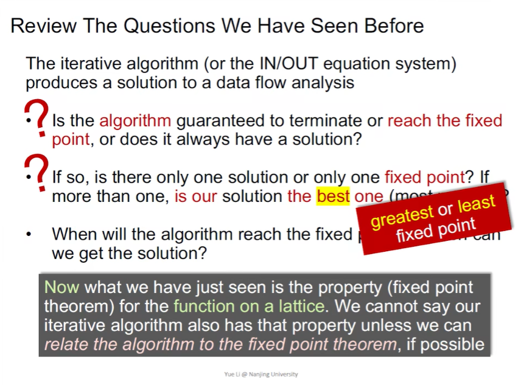
6
6.1
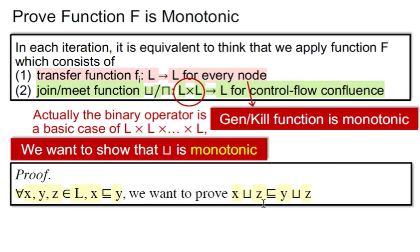
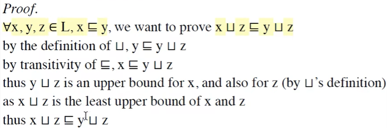
将这个算法关联到了不动点定理，而且证明了其不仅能够达到不动点，而且能够达到最小/大的不动点(best fixed point)。
现在问的是什么时候达到不动点，这是一个复杂度的讨论问题。
定义"高度"为从top到bottom的最长路径长度。
我们姑且假设在每一次迭代，每一步只向下或向上爬一步，也就是\(00..0_k\)改变一个值0→1。
这里就有一个地方我之前估计忽略了，且看gpt原话：
在数据流分析中，我们经常会使用 CFG 来描述程序的控制流，而每个程序点（通常是 CFG 的节点）会有一个关联的 lattice 元素，表示该程序点的状态或变量的可能值
也就是CFG一个节点关联一个lattice元素，假设lattice元素高度为h，CFG有k个nodes，即最多迭代k*n次。
好的这里我们解答了之前的三个问题，接下来到来的是一个新问题。
6.2
May and Must Analysis, a lattice view。
那我们可以将其抽象为大概一个椭圆形的结构，因为接近上下界的地方的值的多少肯定都是越来越少的。
那么我们先讨论may analysis，首先其肯定是从下界开始往上走的，这是不大好理解，我们想象之前的例子，比如检查变量是否定义，no definition can reach代表所有变量都被初始化了，这个结果是unsafe(理解为没查出错误就不舒服就可以了)；而上界则是all definition may reach，这个结果safe but useless，因此我们的分析将停在中间的某个值。
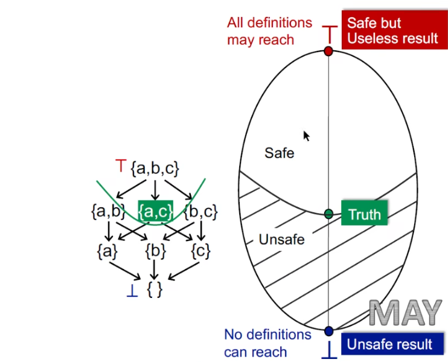
我们的不动点定理阐述了一定接触到的最小的不动点，这已经处在了safe的区域内(这是transfer function的设计理念safe approximation使然)，而由于analysis是往less precise的方向走的，因此我们最终会达到一个相对精确且safe的值。
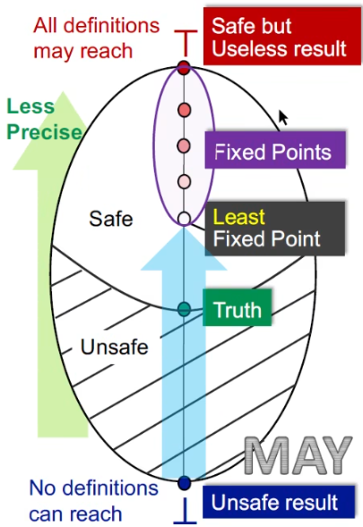
补一张，比较直观。
而must analysis则是从上界往下走，举expression的例子，上界就是all expressions must be available，这是不安全的，因为显然不可能所有优化；下界是no expressions are available，我们不用分析也知道，所以是safe uselss的，其他的分析大差不差。
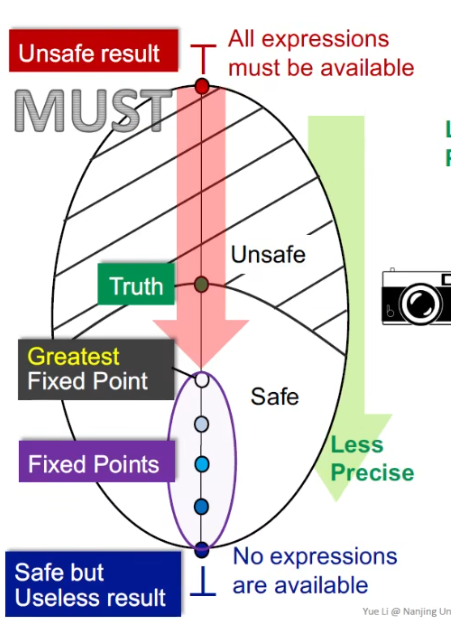
这里讨论How Precise is our solution.
妈的我不是很想看这一块了，有空补吧。
7
过程间分析。
过程内分析作最保守的分析，因此比如传递数据的函数int ten(){return 10;}与int addone(int x){int y = x + 1;return y;}这种情况，我们的过程内分析会认为ten()与addone()传递的值都不是常量(NAC)，这丢失了精度。
过程间分析会使用控制流边传递数据流，这得到了精度。
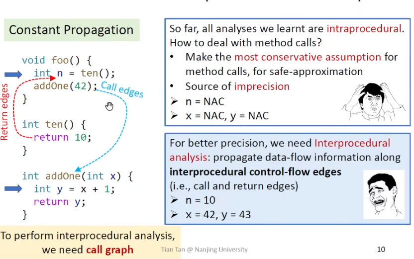
因此我们需要所谓的"call graph"，其是由一系列调用边从"call sites"到"target methods"组成的。
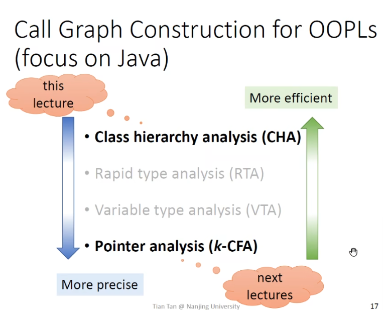
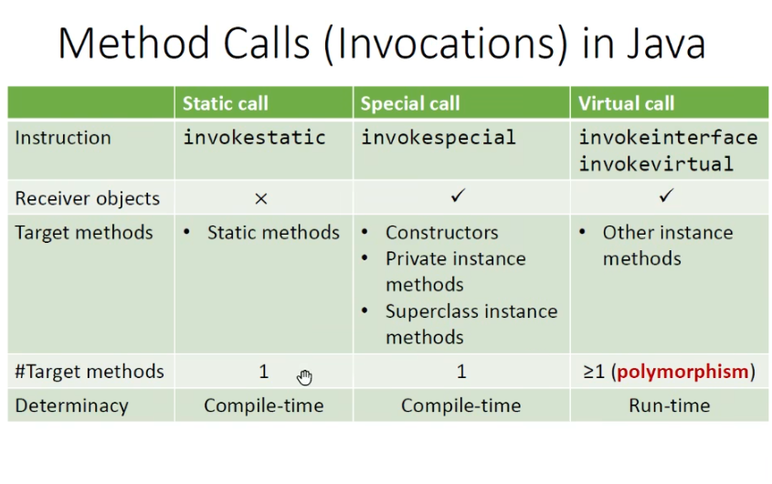
virtual call
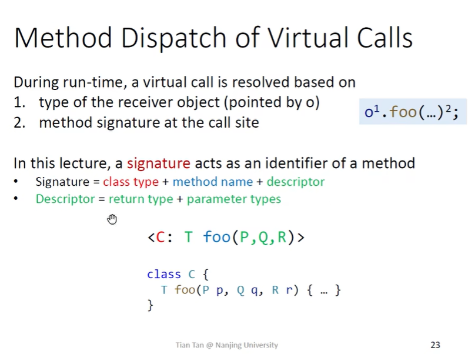
签名(signature)。
思考这个dispatch方法，要么递归取父类，要么取当前类重复定义的方法(相同name与descriper)。
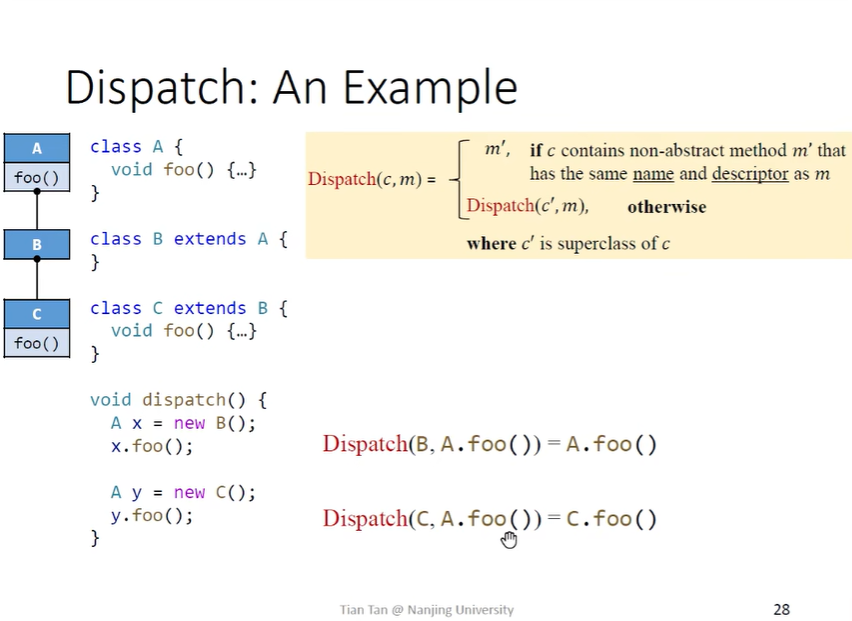
7.1
CHA:class hierachvy analysis
其意义就是分析继承关系并识别方法调用及可能的存在。
注意virtual call的情况指向了c及其所有的子类。
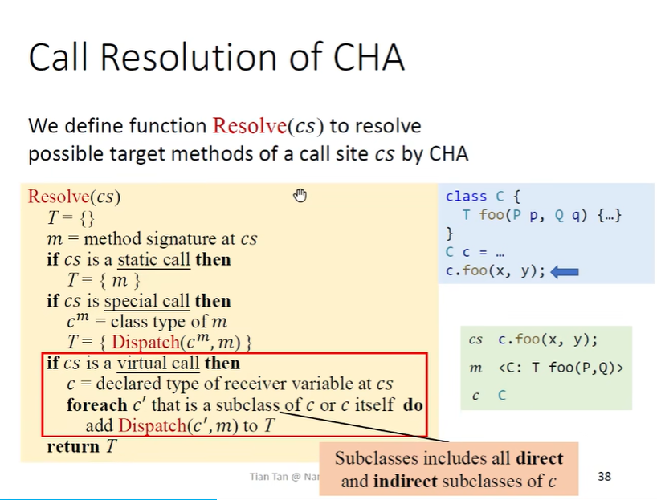
同样举个例子：
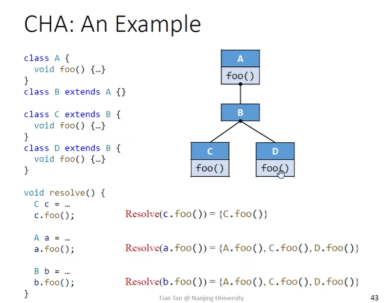
比较难的是这个Resolve(B)，由于是对当前类及其所有子类进行dispatch，对于C、D就是它们的foo方法，对于B的dispatch就是转到A然后用A.foo()
这里的b虽然是new B()的，但是CHA还是会出现C、D。
我们也借此看出，CHA是快然而不准的。
7.2
那好，接下来我们将使用CHA构造call graph调用图。
- 从entry方法开始
- 对于每个reachable method m，Resolve(cs)
- 直到没有reachable method了

这个是算法的大致内容：
- WL：worklist就是接下来要处理的方法
- CG：call graph的call edges
- RM：reachable methods
举个例子。
7.3
ICFG:interprocedural control flow graph:由每个方法自己的CFG构成，再加上call edges与return edges。
return sites(返回点):如果一个语句是调用语句，那么紧跟在其后的语句是return site。
\(ICFG = CFGs + call \& return edgees\)
举个小例子，大概长这样，就是延申出来的样子。
那么这里就可以开始我们的过程间分析。
过程内分析主要是针对node transfer，也就是控制流的statement转换，而过程间分析则是针对edge transfer(call & return)。
-
call edge transfer: pass arguments value
-
return edge transfer: pass return value
那些从函数的call site到return site的边叫做call-to-return edge，允许分析传播本地数据。如果没有，我们就要越过其他方法保存local data-flow，这是效率低下的。
这一块相当于对b的重定义，也就是把它kill掉了。
注意一个数据流的汇合，要是不把b=7kill掉，b就会变成NAC了，这是损失精度的。
8
指针分析，最重要的一块。
8.1
对于简单的CHA过程间分析，由于由3 call targets但是有2个错误位置，所以我们对于其的CHA会得到x=NAC。
但是对于指针分析，我们知道这是x=2的。
别名分析(Alias Analysis):分析两个变量是否可能指向同一个对象。
大致是一个大览。
堆抽象(Heap Abstraction):为了保证指针分析是可以中止的，将无限的对象抽象为有限的抽象对象。
大致分为store based model与storeless model，我们只学习store based model下的一个分支allocation sites。
对每一个allocation site，都有一个抽象对象来表示。
说着很拗口不好懂，对于下面的例子：
对于下面的三次类重new，我们都只将其看作是一个allocation site，也就是一个抽象对象。
由于一个程序中创建点的个数是有限的，所以抽象对象也是有限的。
上下文敏感：由于不同的调用所谓传入的实参可能是不一样的，就会产生不同的上下文。
- 上下文敏感：对于不同的调用，我们分开分析，也就是分开为两个上下文。
- 上下文不敏感：对于不同的调用，我们只分析一次，也就是只有一个上下文。
然而上下文不敏感会汇合数据流，这可能导致数据精度的丢失。因此上下文敏感更精确。
流敏感：对于每条语句都要给出其数据流信息，并且维护一堆指针体。
这就是大概的一个流敏感流程。
流不敏感就是忽略掉了顺序，只分析语句的集合，上面是同一个例子的集合，可以看到我们也只维护了一个指针体。虽然说这样会丢失精度，但是会大大提高效率，因此现在Java主要也是使用insensitive。
分析范围：
- 全程序分析：就是每行都分析
- 需求驱动：只对特定需求进行分析
为了完整解出需求的结果(safe保证)，需求驱动分析未必短很多。
因此课程中我们学习的是全程序分析。
后续的一个小小概览。
8.2
有些语句是不直接影响指针的，比如if-else、for一类的。
Java中，有这些指针：
-
Local variable:x
Static field:C.f -
Instance field:x.f
-
数组元素：array[i]，通常忽略下标，静态分析下无法确定下标
从指针分析角度，不论是往数组里哪个index写，都是往同一个field写，例如：
浓缩为5条语句：
- new:创建一个对象
- assign：赋值
- load：从指针中取出值
- store：将值存入指针
- call:调用方法，其中又有static/special/virtual call，由于virtual call比较复杂，我们只分析virtual call。
8.3
指针分析中的域：
- variables: \(x,y∈V\)
- Fields: \(f,g∈F\)
- Objects: \(o_i,o_j∈O\)
- Instance Fileds: \(o_i.f,o_j.g∈O×F\)
- Pointers: Pointer = \(V \cup (O×F)\)(所有的变量与Instance fields)
-
Points-to-relation: pt = \(Pointer→P(O)\)
- \(P(O)\)表示\(O\)的幂集
- pt(p)表示p指向的集合
接下来我们开始分析规则rules：
-
new：如下：
简单地将新生成的对象x分配一个行号i，并将x直接指向allocation site\(\ o_i\)，也就是\(o_i∈pt(x)\)
-
assign：已知y指向对象\(o_i\)，assign就是将x也指向对象\(o_i\)。
-
store：如果x指向对象\(o_i\)，y指向对象\(o_j\)，就将\(o_i.f\)指向\(o_j\)。
-
load:如果x指向\(o_i\)，\(o_i.f\)指向\(o_j\)，那么y就指向对象\(o_j\)。
与store在某种程度上是对称的。